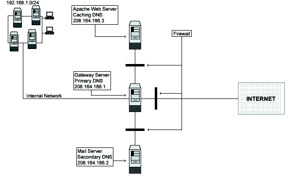

| Securing and Optimizing Linux: RedHat Edition -A Hands on Guide | ||
|---|---|---|
| Prev | Chapter 10. Networking -Firewall | Next |
All servers should be configured to block at least the unused ports, even if there are not a firewall server. This is required for more security. Imagine someone gains access to your firewall gateway server: if your neighborhoods servers are not configured to block unused ports, this is a serious network risk. The same is true for local connections; unauthorized employees can gain access from the inside to your other servers in this manner.
In our configuration we will give you three different examples that can help you to configure your firewall rules depending on the type of the server you want to protect and the placement of these servers on your network architecture.
| The first example firewall rules file will be for a Web Server. |
| The second for a Mail Server. |
| The last for a Gateway Server that acts as proxy for the inside Wins, Workstations and Servers machines. |
See the graph below to get an idea:

The graph above shows you the ports that I enable on the different servers by default in my firewall scripts file in this book
www.openna.com Caching Only DNS 208.164.186.3 .
Unlimited traffic on the loopback interface allowed
ICMP traffic allowed
DNS Caching and Client Server on port 53 allowed
SSH Server on port 22 allowed
HTTP Server on port 80 allowed
HTTPS Server on port 443 allowed
SMTP Client on port 25 allowed
FTP Server on ports 20, 21 allowed
Outgoing traceroute request allowed
deep.openna.com Master DNS Server 208.164.186.1 .
Unlimited traffic on the loopback interface allowed
ICMP traffic allowed
DNS Server and Client on port 53 allowed
SSH Server and Client on port 22 allowed
HTTP Server and Client on port 80 allowed
HTTPS Server and Client on port 443 allowed
WWW-CACHE Client on port 8080 allowed
External POP Client on port 110 allowed
External NNTP NEWS Client on port 119 allowed
SMTP Server and Client on port 25 allowed
IMAP Server on port 143 allowed
IRC Client on port 6667 allowed
ICQ Client on port 4000 allowed
FTP Client on port 20, 21 allowed
RealAudio / QuickTime Client allowed
Outgoing traceroute request allowed
mail.openna.com Slave DNS Server 208.164.186.2 .
Unlimited traffic on the loopback interface allowed
ICMP traffic allowed
DNS Server and Client on port 53 allowed
SSH Server on port 22 allowed
SMTP Server and Client on port 25 allowed
IMAP Server on port 143 allowed
Outgoing traceroute request allowed
The list above shows you the ports that I enable on the different servers by default in my firewall scripts file in this book. Depending on what services must be available in the server for the outside, you must configure your firewall script file to allow the traffic on the specified ports.
www.openna.com is our Web Server,
mail.openna.com is our Mail Hub Server for all the internal network,
deep.openna.com is our Gateway Server